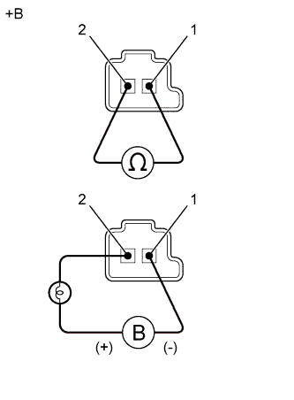

DTC P2714 Характеристика электромагнитного клапана регулирования давления "D" (электромагнитного клапана переключения передач SLT) |
| Код DTC | Условие обнаружения DTC | Неисправный участок |
| P2714 | По разнице частот вращения турбины и выходного вала с учетом давления масла ECM зарегистрировал неисправность в электромагнитном клапане переключения передач SLT (со стороны включения) (логика диагностирования за 2 поездки). |
|
| 1.ПРОВЕРЬТЕ, ОТОБРАЖАЮТСЯ ЛИ ДРУГИЕ DTC (ПОМИМО DTC P2714) |
Подсоедините портативный диагностический прибор к DLC3.
Установите замок зажигания в положение ON (ВКЛ).
Включите портативный диагностический прибор.
Войдите в следующие меню: Powertrain / Engine and ECT / Trouble Codes.
С помощью портативного диагностического прибора считайте коды DTC.
| Результат | Перейти к |
| Выводится только код P2714 | А |
| Помимо кода P2714 выводятся другие DTC | B |
|
| ||||
| А | |
| 2.ПРОВЕРЬТЕ ЭЛЕКТРОМАГНИТНЫЙ КЛАПАН ПЕРЕКЛЮЧЕНИЯ ПЕРЕДАЧ SLT |
|  |
Снимите электромагнитный клапан переключения передач SLT.
Измерьте сопротивление в соответствии со значениями, приведенными в таблице ниже.
| Контакты для подключения диагностического прибора | Условие | Заданные условия |
| 1 - 2 | 20°C (68°F) | 5,0-5,6 Ом |
Подайте в электромагнитный клапан переключения передач напряжение аккумуляторной батареи 12 В и убедитесь в том, что клапан приводится в движение, издавая характерный для этого звук.
| Условия измерений | Заданные условия |
| Клапан приводится в движение, издавая характерный звук. |
| *a | Устройство с неподсоединенным жгутом проводов (электромагнитный клапан переключения передач SLT) |
|
| ||||
| OK | |
| 3.ПРОВЕРЬТЕ КОРПУС КЛАПАНОВ ТРАНСМИССИИ В СБОРЕ |
Проверьте корпус клапанов трансмиссии в сборе (Нажмите здесь).
|
| ||||
| OK | |
| 4.ПРОВЕРЬТЕ МУФТУ ГИДРОТРАНСФОРМАТОРА В СБОРЕ |
Проверьте муфту гидротрансформатора в сборе (Нажмите здесь).
|
| ||||
| OK | ||
| ||